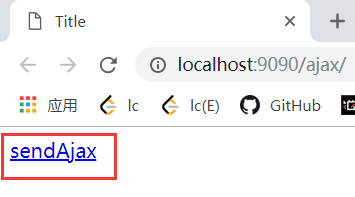

Ajax跨域问题及解决方案原文出处:本文由博客园博主炭烧生蚝提供。
原文连接:https://www.cnblogs.com/tanshaoshenghao/p/10799042.html
复现Ajax跨域问题
- 做两个简单的小项目复现Ajax跨域问题. 后端语言使用Java
- 首先是一个简单的订单系统, 通过访问
/loadOrderList, 最终以json串形式返回订单集合. 该项目使用Tomcat发布在7070端口.
@RequestMapping("/loadOrderList")
@ResponseBody
public List<Order> loadOrderList(String uid){
//模拟订单数据
Order o1 = new Order();
o1.setId("111");
o1.setTotal(333.33);
o1.setDate("2019-4-29");
Order o2 = new Order();
o2.setId("222");
o2.setTotal(444.44);
o2.setDate("2019-5-29");
Order o3 = new Order();
o3.setId("333");
o3.setTotal(555.55);
o3.setDate("2019-6-29");
List<Order> list = new ArrayList<>();
list.add(o1);
list.add(o2);
list.add(o3);
return list;
}
- 在另一个项目中做一个向订单系统发送一个ajax请求, 获取订单集合. 该项目使用Tomcat插件发布在9090端口.
//index.jsp
<%@ page contentType="text/html;charset=UTF-8" language="java" %>
<html>
<head>
<title>Title</title>
<script type="text/javascript" src="https://code.jquery.com/jquery-1.11.3.js"></script>
<script type="text/javascript">
function sendAjax() {
$.post("http://localhost:7070/order/loadOrderList", "uid=1234", function (data) {
alert(data);
});
}
</script>
</head>
<body>
<a href="javascript:sendAjax()">sendAjax</a>
</body>
</html>
- 点击
sendAjax超链接向订单系统发送ajax请求.

- 通过开发者工具发现虽然服务器以状态码200响应回来, 但是控制台却报错了.
- 这就是Ajax跨域出错的一种表现, 下面分析原因.
Ajax跨域介绍
- Ajax跨域问题是由浏览器的同源策略造成的, 首先要理解
源这个概念.
- 我们可以通过协议+域名+端口确定一个源. 在上面的示例中, 你可以把一个项目理解为一个源. Ajax请求可以对源内的资源发起访问, 但是不同源之间进行Ajax就会有问题.
- 当向不同源的资源发起Ajax请求时, 浏览器会加上
Origin字段来标识源
Accept: */*
Accept-Encoding: gzip, deflate, br
Accept-Language: zh-CN,zh;q=0.9
Connection: keep-alive
Content-Length: 8
Content-Type: application/x-www-form-urlencoded; charset=UTF-8
Host: localhost:7070
Origin: http://localhost:9090 协议+域名+端口
- 服务器会根据
Origin字段决定是否同意这次请求, 如果Origin指定的源不在许可范围内, 服务器会返回一个不带有Access-Control-Allow-Origin字段的响应. 浏览器解析时发现缺少了这个字段, 就会报错. 这种错误不能通过状态码识别, 因为状态码很有可能就是200(见上面的案例).
Ajax跨域解决方案
一. 在服务端添加响应头Access-Control-Allow-Origin
- 既然我们已经知道了Ajax跨域失败是因为响应中缺少了响应头
Access-Control-Allow-Origin, 那么就想办法加上去.
- 以Java项目为例, 在后端我们使用
CORSFilter过滤器加上该响应头.
- (假设是Maven项目), 首先在
pom.xml中添加坐标
<dependency>
<groupId>com.thetransactioncompany</groupId>
<artifactId>cors-filter</artifactId>
<version>2.5</version>
<scope>runtime</scope>
</dependency>
<filter>
<filter-name>CORS</filter-name>
<filter-class>com.thetransactioncompany.cors.CORSFilter</filter-class>
<init-param>
<param-name>cors.allowOrigin</param-name><!--这个标签是关键, *代表所有源都能访问-->
<param-value>*</param-value>
</init-param>
<init-param>
<param-name>cors.supportedMethods</param-name>
<param-value>GET, POST, HEAD, PUT, DELETE</param-value>
</init-param>
<init-param>
<param-name>cors.supportedHeaders</param-name>
<param-value>Accept, Origin, X-Requested-With, Content-Type, Last-Modified</param-value>
</init-param>
<init-param>
<param-name>cors.exposedHeaders</param-name>
<param-value>Set-Cookie</param-value>
</init-param>
<init-param>
<param-name>cors.supportsCredentials</param-name>
<param-value>true</param-value>
</init-param>
</filter>
<filter-mapping>
<filter-name>CORS</filter-name>
<url-pattern>/*</url-pattern>
</filter-mapping>
- 配置后重启订单项目, 再次发起Ajax请求可以看到成功返回数据, 响应头中包含了
Access-Control-Allow-Origin, 值为发起Ajax请求的源.
二. 使用JSONP解决
- 上面直接通过过滤器添加响应头的方法可以说是对症下药, 那么还有没有什么偏方呢?
- 还真的有. 在jsp文件中经常通过通过
<script>标签引入一段js代码, 这段代码通常来源于网络, 也就是不同源. 那么我们不妨通过<srcipt>标签完成Ajax请求, 这样便顺带解决了跨域问题.
- 下面还是沿用上面的案例进行演示.
- 我们对发送ajax的jsp进行修改
<%@ page contentType="text/html;charset=UTF-8" language="java" %>
<html>
<head>
<title>Title</title>
<script type="text/javascript" src="https://code.jquery.com/jquery-1.11.3.js"></script>
<script>
function doCallBack(data){
var str = JSON.stringify(data);
alert(str);
}
</script>
</head>
<body>
<script src="http://localhost:7070/order/loadOrderList3?uid=111&callBack=doCallBack"></script>
</body>
</html>
- 上面的代码中, 我们首先定义了
doCallBack()函数, 它接收一个字符串参数, 并且会把接收到的字符串显示出来.
- 然后在
<body>标签中编写<script>标签, 我们将通过<script>标签请求订单系统, 订单系统将会返回一段js代码, 这段js代码会调用doCallBack()方法.
- 为了能够拼接出
doCallBack(字符串参数...)js代码, 我们在订单系统中作如下操作.
@RequestMapping("/loadOrderList3")
@ResponseBody
public String loadOrderList3(String uid, String callBack){
//模拟订单数据
Order o1 = new Order();
o1.setId("111");
o1.setTotal(333.33);
o1.setDate("2019-4-29");
Order o2 = new Order();
o2.setId("222");
o2.setTotal(444.44);
o2.setDate("2019-5-29");
Order o3 = new Order();
o3.setId("333");
o3.setTotal(555.55);
o3.setDate("2019-6-29");
List<Order> list = new ArrayList<>();
list.add(o1);
list.add(o2);
list.add(o3);
//拼接js代码
String result = callBack + "(" + JSON.toJSONString(list) + ")";
return result;
}
- 这个想法是不是很妙? 明白这个原理之后, 我们可以使用jQuery方便进行JSONP操作, 在上面的代码中我们人为指定了一个名为
doCallBack的函数, 而jQuery会随机用时间戳生成一个函数名, 原理和上面是一样的.
- 所以完成一开时点击超链接发送Ajax请求只需要如下几步.
<%@ page contentType="text/html;charset=UTF-8" language="java" %>
<html>
<head>
<title>Title</title>
<script type="text/javascript" src="https://code.jquery.com/jquery-1.11.3.js"></script>
<script>
function sendAjax(){
$.getJSON("http://localhost:7070/order/loadOrderList3?callBack=?","uid=111",
function (data) {
var str = JSON.stringify(data);
alert(str);
});
}
</script>
</head>
<body>
<a href="javascript:sendAjax()">sendAjax</a>
</body>
</html>
小结
- 上面两种解决办法在思路上有着本质的不同. 方案一抓住
CORS跨域访问问题的本质, 在后端加上响应头解决跨域问题. 方案二JSONP利用的是<script>标签能够跨域获取js代码的特性, 绕过跨域问题.